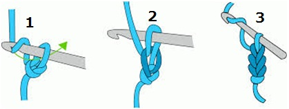

Crochê para iniciantes
Como iniciar no crochê?
O primeiro passo para aprender como fazer crochê para iniciantes é montar um kit com as principais coisas de crochê para iniciantes, assim você consegue trabalhar com praticidade. Abaixo, listamos as coisas de crochê para iniciantes que não podem faltar no seu kit:
Agulha - há um formato de agulha exclusivo para a execução de trabalhos em crochê, e os tamanhos variam de acordo com a linha utilizada. Iniciantes encontrarão mais conforto e melhor precisão na execução de pontos com uma agulha de metal, tamanho 2.
Linha - o ideal para quem não tem prática no crochê é começar manuseando linhas de algodão, principalmente as mais finas, pois são mais fáceis de serem trabalhadas.
Tesourinha - esta ferramenta é primordial para cortar a linha sem desfiá-la.
Pontos básicos do crochê
Pontos que todo iniciante deve saber
Ponto correntinha
Para dar início a qualquer trabalho de crochê, você precisará fazer o ponto correntinha. É a partir dele que você incluirá qualquer outro ponto em seu projeto
Ponto baixo

O ponto baixo possui uma característica mais firme e fechada, ideal para trabalhos que você deseja manter maior estabilidade da peça.
Ponto baixissímo

O ponto baixíssimo é ideal para acabamentos e finalizações, para que a borda da sua peça fique bastante firme.
Ponto Alto

O ponto alto possui uma trama média e é mais aberto que o ponto baixo. Ele é bastante usado em diversas receitas de crochê, e provavelmente o que você mais usará em seus trabalhos. Perfeito para criar relevo.
Quer aprender mais? Assista o vídeo abaixo
Clique aqui